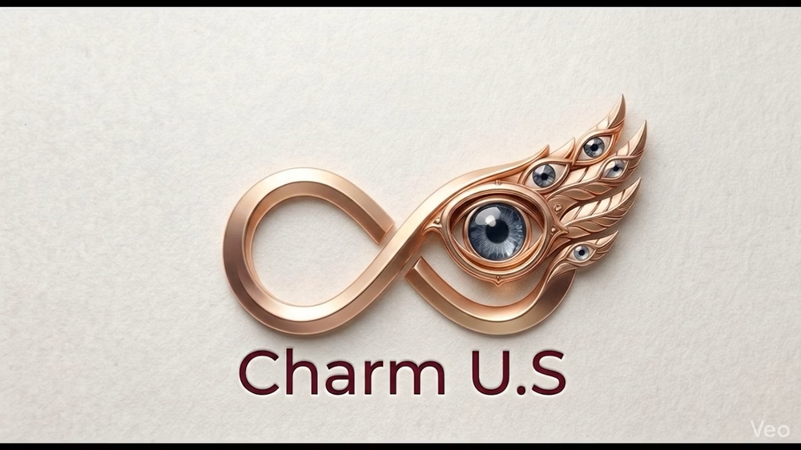
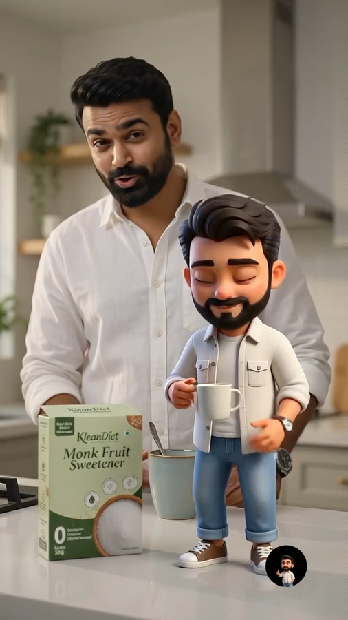
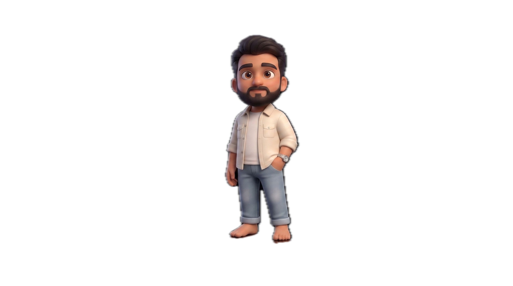

Original logo reveal · Press play
01 / Identity & motion
Charm U.S
A sculptural infinity mark with peacock-eye details, rose-gold warmth and a moving reveal.
I’m Vinayak. I give brands a visual voice through thoughtful logos, websites and content that feels unmistakably theirs.

↙A closer look at my work across brand identity, architecture, wellness, fashion and creative technology.
Showing all 7 projects.
A sculptural infinity mark with peacock-eye details, rose-gold warmth and a moving reveal.
A botanical logo, animated emblem and website for an Ayurvedic telehealth practice, brought together in green and gold.
Fashion and styling content with an experimental edge, using AI as part of the creative process.
Explore @stylewithglitch ↗
▶ Watch the adKleanDiet / Mini-V product creativeLogo design and product advertising for a nutrition brand. Watch Mini-V bring the monk fruit sweetener creative to life.
A complete logo project for FENCO Fenestration Systems: a gold architectural monogram, wordmark and branded window-and-door showcase.
Redrawing an existing logo and preparing consistent digital and print exports. My contribution was the redraw and artwork preparation, not the original identity design.

MEET MINI-V / PERSONAL CONCEPTMeet Mini-V, the digital companion from my original portfolio. It brings a familiar face to the screen and helps visitors find their way around my work.
Here, Mini-V is your portfolio guide. Choose a question to explore my services, projects and contact options.
Product stories, character-led ads and a self-initiated fashion concept. Three ways I bring an idea into motion.
A close-up product story centred on a Begun Online bag, its material and visual details.
Visit Begun Online ↗A character-led advertisement for monk fruit sweetener, pairing the product with my Mini-V digital companion.
Explore Klean.diet ↗A personal fashion-sale creative featuring Mini-V, made to explore an advertising idea for Style With Glitch.
Independent portfolio concept. Not a brand deal, paid partnership or official Westside campaign.
Have a product or a story you want people to notice?
Let’s create your next ad ↗Starting something new or giving an existing brand a clearer direction? Let’s find the right scope.
Logo direction, colour, typography and a visual language that belongs to you.
Let’s build a brand ↗Portfolio and business websites that present your work clearly and help people take the next step.
Let’s design a website ↗Social visuals, campaign ideas and AI-assisted creative exploration with a consistent brand voice.
Let’s create content ↗I’m Vinayak Sharma, a graphic designer and engineer based in Jaipur. I like making things that look considered and work well—from a memorable brand mark to an interactive digital experience.
My work connects identity, web and social. AI helps me explore visual directions; I shape the idea, make the design decisions and bring everything together.
Explore my engineering portfolio ↗Your audience, your goals, your direction.
Ideas, visual references and a clear creative route.
Develop the details together through feedback.
Prepare the agreed assets for their real-world use.
Tell me about your brand, what you need and when you need it. We’ll take it from there.
vnksharma13@gmail.com ↗